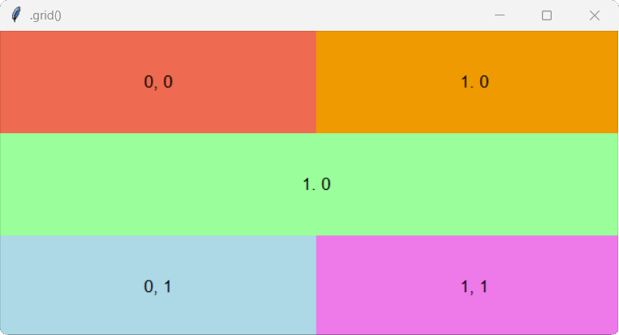
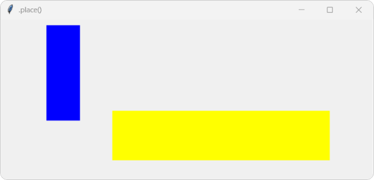

Теоретичний матеріал
Настав час більш детально з’ясуємо питання про розташування віджетів графічної оболонки, Tkinter у вікні або фреймі. Це важливе питання, тому що від інтуїтивності інтерфейсу багато в чому залежить зручність використання програми.
У Tkinter існує три методи пакування:
- .pack()
- .grid()
- .place()
!Зверніть увагу, що в одному вікні або фреймі можна використовувати тільки один тип пакувальника. При змішуванні різних пакувальників програма, швидше за все, працювати не буде!
Метод .pack()
Як правило цей пакувальник використовують для розміщення віджетів один за одним (зверху вниз або зліва направо). При використанні цього пакувальника за допомогою властивості side можна вказати до якої сторони батьківського віджета він повинен примикати, за допомогою властивості fill можна заповнити віджетом весь простір по горизонталі або вертикалі, властивість anchor – допоможе припасувати віджет до відповідної сторони горизонту.
Властивості .pack():
| Властивість | Значення |
|---|---|
| side |
•
TOP — розміщує віджет зверху
• BOTTOM — розміщує віджет знизу • LEFT — розміщує віджет ліворуч • RIGHT — розміщує віджет праворуч |
| fill |
Змушує віджет заповнити весь доступний простір у вказаному напрямку по одній із
осей:
• X - заповнює простір по горизонталі • Y - Заповнює прострі по вертикалі> |
| anchor |
Змушує віджет припасуватися до однієї із сторін в якому цей віджет розміщений:
• N - (nord) до північнох сторони • S - (south) до південної сторони • W - (west) до західної сторони • E - (east) до східної сторони Значення властивостей можна комбінувати: NW, SE, NSWE, тощо. |
Метод .grid()
Слово grid перекладається з англійської як сітка. Тому віджети цей пакувальник розміщує у сітці, а точніше, у таблиці. Вікно розділяється на рядки та стовпці і кожна комірка в отриманій таблиці може містити віджет. Адреса кожної комірки складається з номера рядка і номера стовпчика. Нумерація починається з нуля. Комірки можна об'єднувати як по вертикалі, так і по горизонталі.
Метод .grid() є найбільш гнучким менеджером геометрії в tkinter.
Розміщення віджета в тій чи іншій клітинці задається через аргументи row і column, яким присвоюються відповідно номер рядка і стовпчика. Щоб об'єднати комірки по горизонталі, використовується атрибут columnspan, якому присвоюється кількість поєднуваних комірок. А опція rowspan об'єднує комірки по вертикалі.
Властивості .grid():
| Властивість | Значення |
|---|---|
| row | Номер рядка в який поміщаємо віджет |
| column | Номер стовпця в який поміщаємо віджет |
| columnspan | Кількість стовпців які займає віджет |
| rowspan | Кількість рядків які займає віджет |
| padx / pady | Розмір зовнішньої межі по вертикалі або горизонталі (розширюється вільний простір) |
| ipadx / ipady | Розмір внутрішньої межі по вертикалі або горизонталі (розширюється сам віджет) |
| sticky |
Вказує до якої сторони припасуватися віджет:
• n - (nord) до північнох сторони • s - (south) до південної сторони • w - (west) до західної сторони • e - (east) до східної сторони Значення властивостей можна комбінувати: nw, se, nwse, тощо. |
| in_ | Розміщує віджет всередині іншого батьківського вікна або контейнера. |
Який це має вигляд:
| (0,0) | (0,1) | (0,2) |
| (1,0) | (1,1) | (1,2) |
| (2,0) | (2,2) | |
| (3,0) | (3,1) | (3,2) |
Метод .place()
.place() є простим пакувальником, що дозволяє розміщувати віджет в фіксованому місці з фіксованим розміром. При використанні цього пакувальника необхідно вказувати координати кожного віджета. Цей пакувальник, хоч і здається незручним, надає повну свободу в розміщенні віджетів на вікні.
Метод .place() вказує віджету його положення або в абсолютних значеннях (в пікселях), або відносних (в частках батьківського вікна).
Властивості .place():
| Властивість | Значення |
|---|---|
| anchor | Якір. Точка припасування віджета до однієї або декількох сторін горизонту, які ми вказуємо. Можливі значення: N, S, W, E, NW, NE, SW, SE, CENTER (за замовчуванням). |
| relwidth / relheight | Відносний розмір (ширина та висота) віджета відносно батьківського вікна у частках від 0.0 до 1.0 |
| relx / rely | Відносне положення віджета відносно батьківського вікна у частках від 0.0 до 1.0. координати (0.0, 0.0) відповідають верхньому лівому куту батьківського вікна, а координати (1.0, 1.0) - нижньому правому куту. |
| width / height | Абсолютний розмір (ширина та висота) віджета в пікселях. |
| x / y | Абсолютне положення віджета в пікселях. Координати (0, 0) відповідають верхньому лівому куту батьківського вікна. |
Приклад .pack()
Створимо у вікні чотири різнокольорові мітки та упакуємо методом .pack().
Код програми
from tkinter import *
win=Tk()
win.title(".pack()")
win.geometry("641x330")
label1 = Label(text="1", width=20, height=4, font="Arial 13", bg="coral").pack()
label2 = Label(text="2", width=20, height=4, font="Arial 13", bg="green2").pack()
label3 = Label(text="3", width=20, height=4, font="Arial 13", bg="light blue").pack()
label4 = Label(text="4", width=20, height=4, font="Arial 13", bg="gold").pack()
win.mainloop()
Результат

А зараз ці ж мітки впорядкуємо горизонтально з права на ліво - опція (RIGHT) та заповнимо весь простір по вертикалі - опція (Y).
Код програми
from tkinter import *
win=Tk()
win.title(".pack()")
win.geometry("641x330")
label1 = Label(text="1", width=17, height=4, font="Arial 13", bg="coral").pack(side=RIGHT, fill=Y)
label2 = Label(text="2", width=17, height=4, font="Arial 13", bg="green2").pack(side=RIGHT, fill=Y)
label3 = Label(text="3", width=17, height=4, font="Arial 13", bg="light blue").pack(side=RIGHT, fill=Y)
label4 = Label(text="4", width=17, height=4, font="Arial 13", bg="gold").pack(side=RIGHT, fill=Y)
win.mainloop()
Результат

Приклад .grid()
Створимо у вікні п'ять різнокольорових міток, та упакуємо методом .grid(), при цьому третя мітка повинна займати весь другий рядок, тобто обєднаємо два стовпці за допомогою columnspan.
Код програми
from tkinter import *
root = Tk()
root.title(".grid()")
root.geometry('610x300')
lab1 = Label(root, height=5, width=34, text="0, 0", bg="coral2", font="Arial 13").grid(row=0, column=0)
lab2 = Label(root, height=5, width=34, text="1. 0", bg="orange2", font="Arial 13").grid(row=0, column=1)
lab3 = Label(root, height=5, width=34, text="1. 0", bg="palegreen1", font="Arial 13").grid(row=1, column=0, columnspan="2", sticky="nesw")
lab4 = Label(root, height=5, width=34, text="0, 1", bg="light blue", font="Arial 13").grid(row=2, column=0)
lab5 = Label(root, height=5, width=34,text="1, 1", bg="orchid2", font="Arial 13").grid(row=2, column=1)
root.mainloop()
Результат

Приклад .place()
Створимо у вікні дві мітки синього та жовтого кольорів, та упакуємо методом .place().
Код програми
from tkinter import *
w = Tk()
w.title(".place()")
w.geometry('610x300')
lab1 = Label(w, bg='blue', width=7, height=10)
lab1.place(x=75, y=10)
lab2 = Label(w, bg='yellow', width=50, height=5)
lab2.place(relx=0.3, rely=0.5)
w.mainloop()
Результат

Завдання
1. Світолофор (пакувальник .pack())
Створіть вікно з трьоама мітками.
- Перша мітка: текст "Червоний", фон червоний;
- Друга: текст "Жовтий", фон жовтий;
- Третя: текст "Зелений", фон зелений;
- Файл з кодом програми збережіть у власну папку з іменем tk_3_01.py.
* Умова: Розмістіть їх вертикально по центру вікна. Використовуйте fill="x" та pady=10, щоб вони розтягувалися по ширині та мали відступи один від одного.
2. Годинник (пакувальник .grid())
Створіть вікно з дев'ятьма мітками, які розташовані у вигляді годинника.
- Мітки повинні бути розташовані у вигляді годинника (1-2-3 в першому рядку, 4-5-6 у другому, 7-8-9 у третьому);
- Файл з кодом програми збережіть у власну папку з іменем tk_3_02.py.
* Умова: Використовуйте columnspan=3 для центральної мітки, щоб вона займала весь другий рядок.
3. Гра (пакувальник .place())
Створіть вікно з двома мітками, які розташовані у протилежних кутах вікна.
- Перша мітка: текст "Гравець 1", фон синій;
- Друга: текст "Гравець 2", фон жовтий;
- Файл з кодом програми збережіть у власну папку з іменем tk_3_03.py.
* Умова: Використовуйте абсолютні координати для першої мітки та відносні координати для другої, щоб вона завжди залишалася в правому нижньому куті незалежно від розміру вікна.